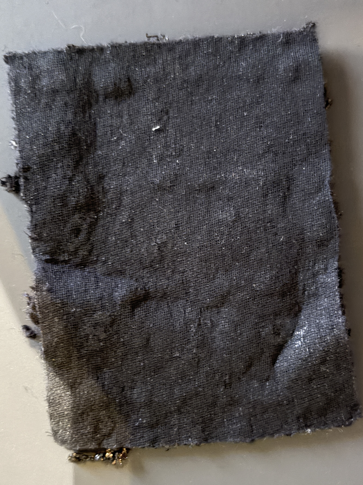
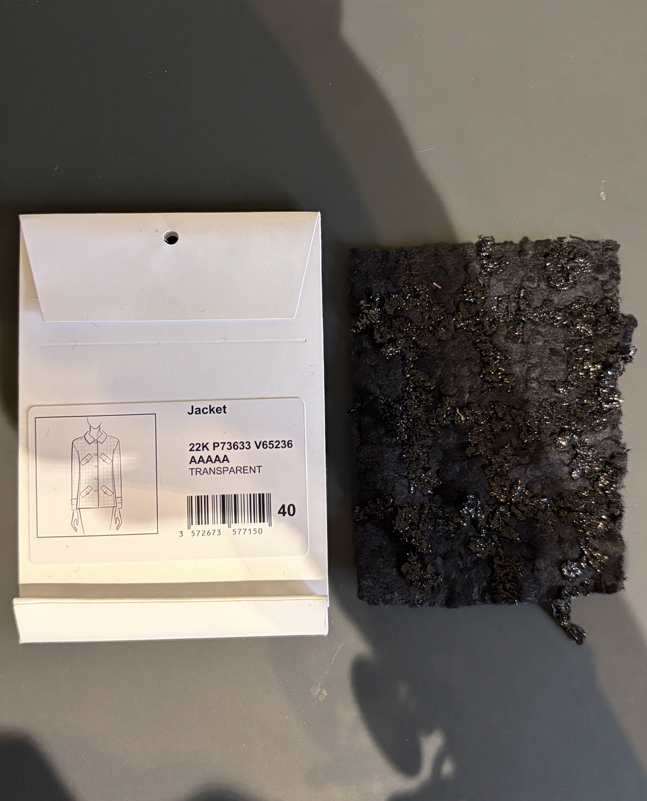
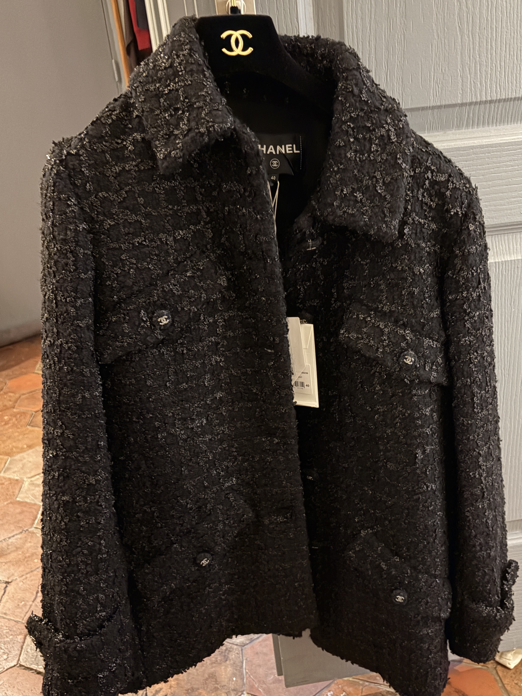
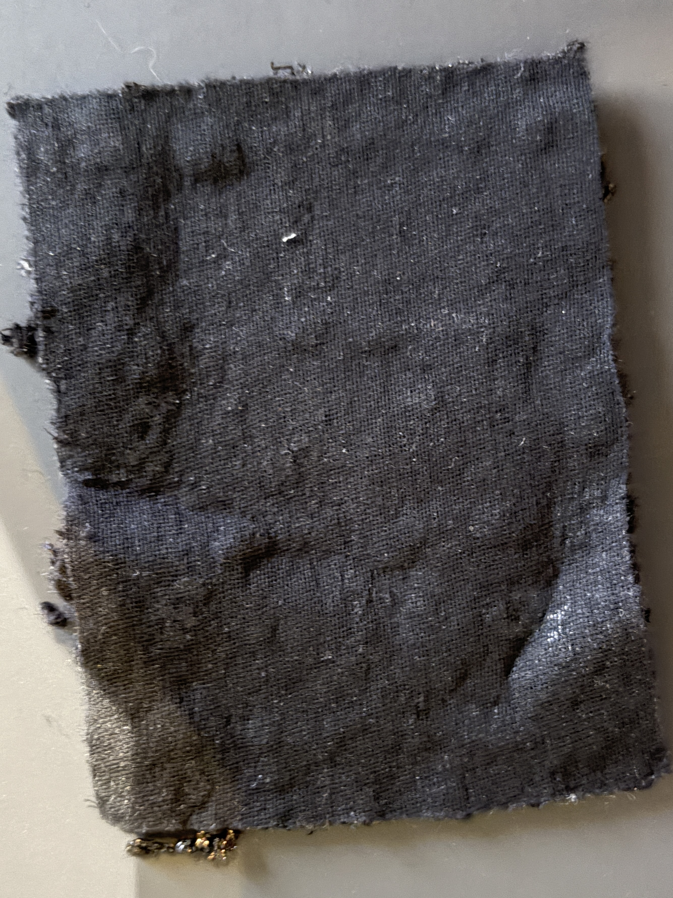
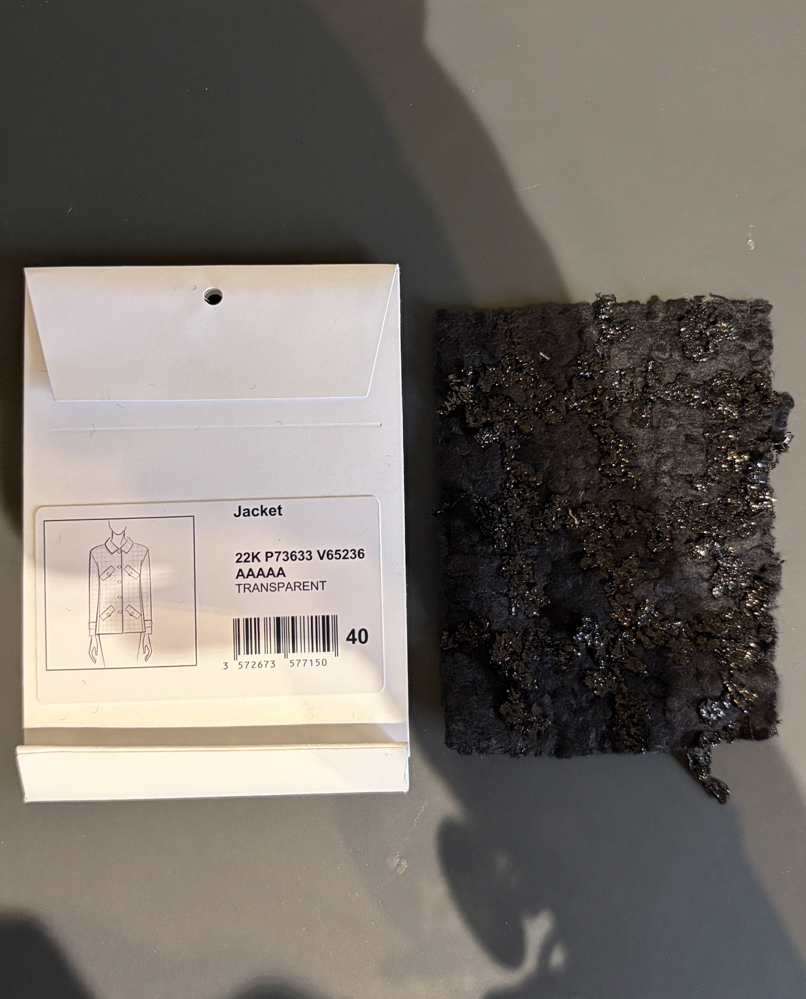
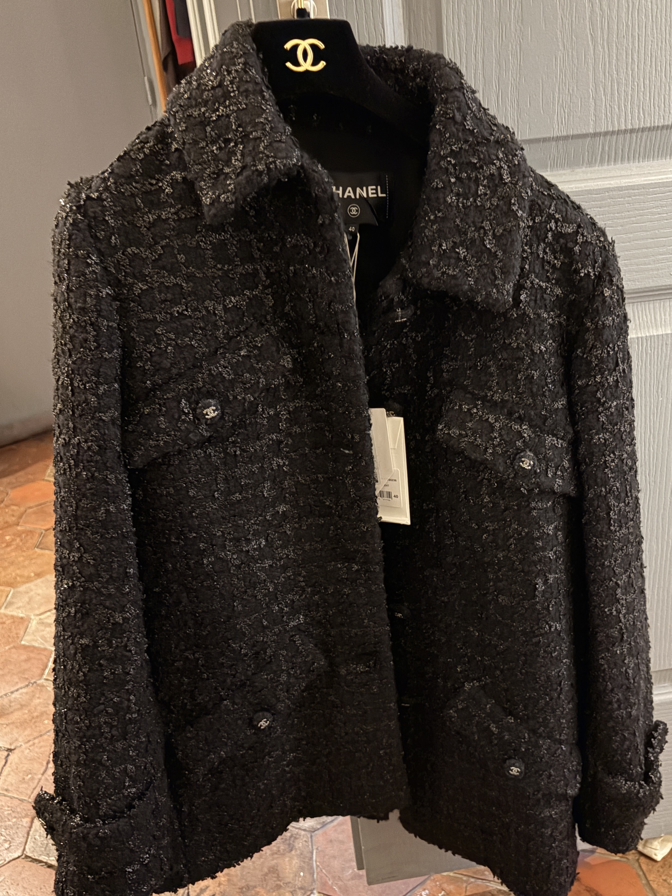

Matière / composition
Tissu majoritairement composé de fibres naturelles animales (laine), associées à des fibres synthétiques et décoratives (fibres brillantes polyester).
Fil
Le tissu est réalisé à partir de fils fantaisie :
- fils retors en laine pour la structure principale
- fils bouclés et irréguliers créant le relief caractéristique du tweed
- fils métallisés plats ou légèrement torsadés intégrés dans la trame pour l’effet brillant.
Construction textile
Tissu chaine et trame.
Armure
Armure de base toile modifiée, typique du tweed, avec utilisation de fils décoratifs flottants.
Ennoblissement couleur
Teinture en pièce ou mélange de fils teints avant tissage (probable).
Ennoblissement d’apprêt
- Possible grattage très léger / lainage pour adoucir la surface
- Stabilisation thermique pour fixer les fils métallisés
Contexture (chaîne et trame)
Tissu tissé, épais, avec une surface irrégulière, granuleuse et en relief.
Poids
Poids estimé : moyen à lourd, environ 350 à 450 g/m².
Produit fini
Veste en tweed Chanel.
 




